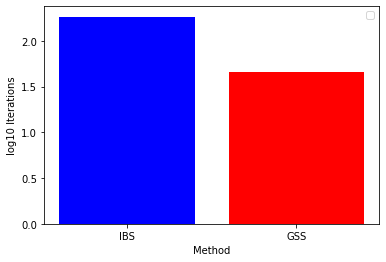
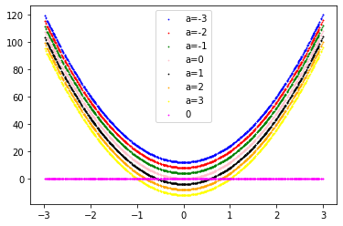

import numpy as np
import pandas as pd
import matplotlib.pyplot as plt
import random
import math
from scipy.optimize import minimize
# function of x**2
def x2(x):
return x**2
# Derivative of x**2
def x2der(x):
return 2*x
def IBS(derivative, u, l, tol=10**(-4), maxiter=50):
iteration = 0
# End condition
while (u - l > tol) and (iteration < maxiter):
value = derivative( ( u + l ) /2)
if value < 0:
l = value
else:
u = value
iteration += 1
return ((u + l) /2, iteration)
def GSS(function, u, l, tol=10**(-4), maxiter=50):
golden = (1 + 5 ** 0.5) / 2 -1
iteration = 0
# End condition
while (u - l > tol) and (iteration < maxiter):
x1 = u - golden*(u - l)
x2 = l + golden*(u - l)
value1 = function(x1)
value2 = function(x2)
if value1 < value2:
u = x2
else:
l = x1
iteration += 1
return ((u + l) /2, iteration)
ibs = []
gss = []
maxiterations = 1000
for i in range(50):
lower = np.random.uniform(-10, 0)
upper = np.random.uniform(0, 10)
tolerance = np.random.uniform(10**(-8), 0)
ibs.append(IBS(x2der, upper, lower, tolerance, maxiter=maxiterations)[1])
gss.append(GSS(x2, upper, lower, tolerance, maxiter=maxiterations)[1])
plt.bar('IBS', height= np.log10(np.average(ibs)), color='blue')
plt.bar('GSS', height= np.log10(np.average(gss)), color='red')
plt.xlabel('Method')
plt.ylabel('log10 Iterations')
plt.legend()
No handles with labels found to put in legend.
<matplotlib.legend.Legend at 0x1e2915f6d00>

def f(x):
return (1-x)**2
def f1(x):
return -2*(1-x)
def f2(x):
return 2
xs = []
fs = []
f1s = []
f2s = []
for i in range(1000):
x = np.random.uniform(-3, 5)
xs.append(x)
fs.append(f(x))
f1s.append(f1(x))
f2s.append(f2(x))
plt.scatter(xs,fs, color='blue', label='f')
plt.scatter(xs, f1s, color='red', label="f'")
plt.scatter(xs, f2s, color='magenta', label="f''")
plt.legend()
<matplotlib.legend.Legend at 0x1e291d561f0>
def g2(x,a):
return -4*(a-3*x**2)
xs = []
g2s = []
for i in range(1000):
x = np.random.uniform(-3, 3)
xs.append(x)
g2s.append([g2(x,-3),g2(x,-2),g2(x,-1),g2(x,0),g2(x,1),g2(x,2),g2(x,3)])
g2s = np.array(g2s)
zeros = np.zeros(len(g2s))
plt.scatter(xs, g2s[:,0], s=0.5, color='blue', label='a=-3')
plt.scatter(xs, g2s[:,1], s=0.5, color='red', label='a=-2')
plt.scatter(xs, g2s[:,2], s=0.5, color='green', label='a=-1')
plt.scatter(xs, g2s[:,3], s=0.5, color='pink', label='a=0')
plt.scatter(xs, g2s[:,4], s=0.5, color='black', label='a=1')
plt.scatter(xs, g2s[:,5], s=0.5, color='orange', label='a=2')
plt.scatter(xs, g2s[:,6], s=0.5, color='yellow', label='a=3')
plt.scatter(xs, zeros, s=0.5, color='magenta', label='0')
plt.legend()
<matplotlib.legend.Legend at 0x1e291e33bb0>

$\nabla p = (2 (200 v_1^3 - 200 v_1 v_2 + v_1 - 1), 200 (y - x^2))$
H=$\begin{bmatrix}(-400 (v_2 - v_1^2) + 800 v_1^2 + 2 & -400 v_1\-400 v_1 & 200\end{bmatrix}$
$\lambda_1 = 600 v_1^2 - \sqrt{360000 v_1^4 - 240000 v_1^2 v_2 + 41200 v_1^2 + 40000 v_2^2 + 39600 v_2 + 9801} - 200 v_2 + 101$ $\lambda_2 = 600 v_1^2 + \sqrt{360000 v_1^4 - 240000 v_1^2 v_2 + 41200 v_1^2 + 40000 v_2^2 + 39600 v_2 + 9801} - 200 v_2 + 101$
It is clear that $\lambda_1 \le \lambda_2 $ therefore, we need to find the conditions that fulfill $\lambda_1>0$ $600 v_1^2 - \sqrt{360000 v_1^4 - 240000 v_1^2 v_2 + 41200 v_1^2 + 40000 v_2^2 + 39600 v_2 + 9801} - 200 v_2 + 101 > 0$
def eigen1(x,y):
return 600*x**2 - math.sqrt(360000*x**4 - 240000*(x**2)*y + 41200*x**2 + 40000*y**2 + 39600*y + 9801) - 200*y + 101
def eigen2(x,y):
return 600*x**2 + math.sqrt(360000*x**4 - 240000*(x**2)*y + 41200*x**2 + 40000*y**2 + 39600*y + 9801) - 200*y + 101
x = 1
y = 1
print(eigen1(x,y), eigen2(x,y))
0.3993607674876216 1001.6006392325123
x = []
y = []
min_eigen = []
for i in range(-10,10):
for j in range (-10,100):
x.append(i)
y.append(j)
e1 = eigen1(i,j)
e2 = eigen2(i,j)
if e1 < e2:
min_eigen.append(e1)
else:
min_eigen.append(e2)
pos_eigen = [0 if item<0 else 1 if item==0 else 2 for item in min_eigen]
plt.scatter(x, y, c=pos_eigen, cmap='Paired')
plt.xlabel('v_1')
plt.ylabel('v_2')
plt.show()

Explanation from https://www.youtube.com/watch?v=vOYlVvT3W80 and GIF from http://takashiida.floppy.jp/en/education-2/gif-nelder-mead/
 The Nelder-Mead method is a direct search method, meaning that it does not require the computation of the gradient. This makes it very useful for cases where either the gradient is hard to obtain/evaluate or if the function is not smooth. It is based on a n+1 dimension structure called a simplex, for example, if we are in $\Re^2$, it will be a triangle (3 points) and in each iteration, this points are updated. Let's take u, v and w as our three points.
The Nelder-Mead method is a direct search method, meaning that it does not require the computation of the gradient. This makes it very useful for cases where either the gradient is hard to obtain/evaluate or if the function is not smooth. It is based on a n+1 dimension structure called a simplex, for example, if we are in $\Re^2$, it will be a triangle (3 points) and in each iteration, this points are updated. Let's take u, v and w as our three points.
In each iteration, there are 6 steps:


def objective_p(x):
return (1 - x[0])**2 + 100*(x[1] - x[0]**2)**2
maxiterations = 5
optimizer = [1,1]
NMA_distance = []
CG_distance = []
for i in range(10):
p1 = [np.around([np.random.uniform(-3, 12)], decimals=1)[0], np.around([np.random.uniform(-6, 60)])[0]]
p2 = [np.around([np.random.uniform(-3, 12)], decimals=1)[0], np.around([np.random.uniform(-6, 60)])[0]]
p3 = [np.around([np.random.uniform(-3, 12)], decimals=1)[0], np.around([np.random.uniform(-6, 60)])[0]]
pt = [p1, p2, p3]
NMA = minimize(objective_p, pt, method='nelder-mead', options={'maxiter':maxiterations})
CG = minimize(objective_p, pt, method='CG', options={'maxiter':maxiterations})
# evaluate solutions
solution_NMA = NMA['x']
evaluation_NMA = objective_p(solution_NMA)
# euclidean distance
NMA_distance.append((solution_NMA[0] - optimizer[0])**2 + (solution_NMA[1] - optimizer[1])**2)
solution_CG = CG['x']
evaluation_CG = objective_p(solution_CG)
CG_distance.append((solution_CG[0] - optimizer[0])**2 + (solution_CG[1] - optimizer[1])**2)